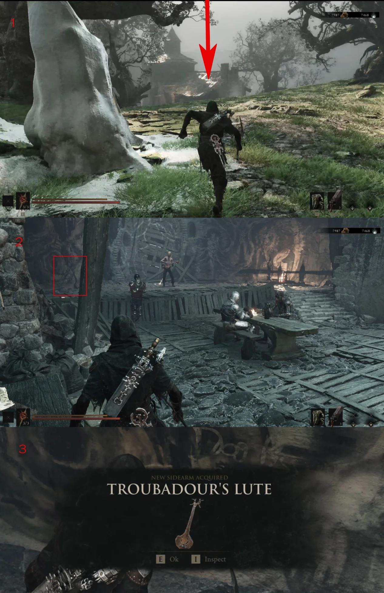

Sidearm acquisition · Fainweald
Troubadour's
Lute
Troubadour's Lute is placed on the stage inside the One-Legged Wolf Tavern. The supplied route image covers the direct approach from the Beacon.
- Region
- Fainweald
- Location
- One-Legged Wolf Tavern
- Type
- Sidearm
